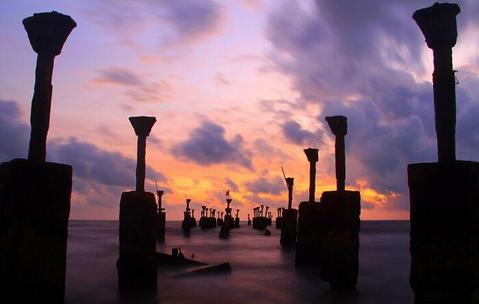
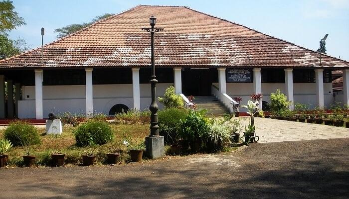
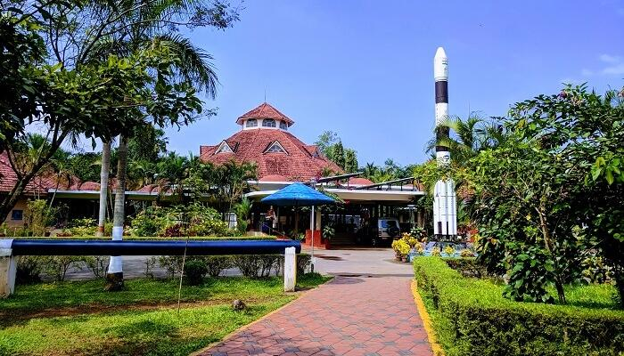
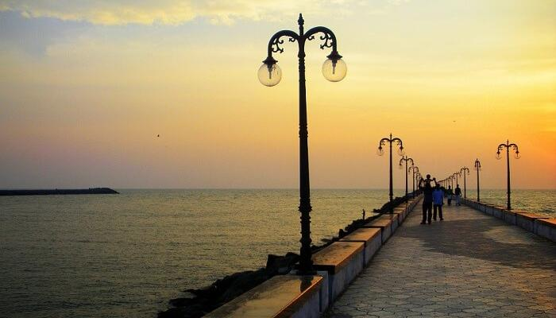

Calicut

Kerala is a home to a variety of landscapes and anyone who’s come across this God’s own country would surely agree. Calicut or much famed as Kozhikode, is one such beautiful city in Kerala that feel like every traveler’s dream. A pristine haven in nature, Kozhikode is filled with lush greenery, tranquil beaches, and historical forts. Also serving as the perfect weekend getaway for the locals and nearby travelers, get going to explore these ten amazing places to visit in Calicut which form the essence of the spice capital of Kerala.
Top Places To Visit In Calicut
Pazhassi Raja Museum And Art Gallery – History And Culture

For all the history lovers, Calicut is the perfect place to be. The Pazhassi Raja Museum and Art Gallery is one of the best places to visit in Calicut. Named after the famous ruler Pazhassi Raja who fought the British with the help of tribes, the museum displays a variety of monuments, mural paintings, and old coins.
Location: East Hill, Kozhikode, Kerala
Timings: Tuesdays to Sunday – 10 AM to 4:50 PM
Mananchira Square – Beautiful Scenery

Situated in the heart of the city, the Mananchira Square tops the Calicut tourist places list. The Mananchira Square features a clearwater pool at the centre surrounded by temples, churches, and ancient homes built all around the square. Apart from that, one must visit the musical fountain, open stage, and theatre where regular shows are held to depict the historical lives of kings and palaces.
Location: Around Mananchira Tank, Kozhikode, India
Beypore

Located in the heart of Calicut, Beypore is a popular ship building port which is known to be one of the busiest fishing harbours of Kerala. Considered to be one of the best places to visit in Calicut, the Beypore beach also happens to be an important commercial center for building the ships. While the city is also famed for its unique shipping vessel called “Uru”, do not miss out on going for a ride on the famous two-kilometer long Pulimoodu bridge.
Location: South of Kozhikode Centre, Kozhikode, India